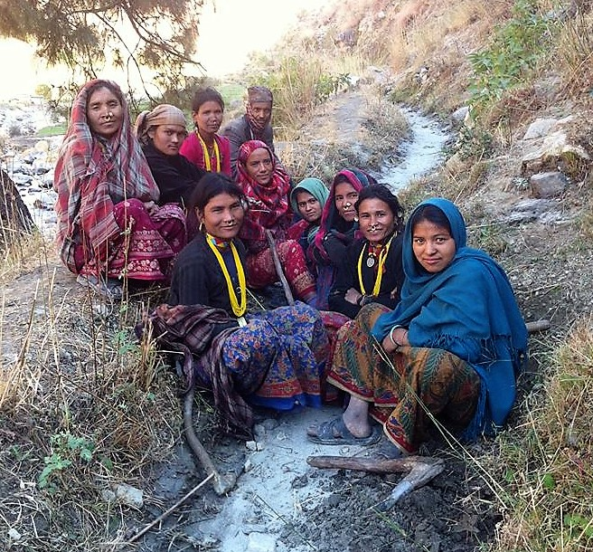

Leadership Training & Organization Development Consulting
Aranya Solutions can provide the structure, strategy, and facilitation organizations need to ensure dynamic success, this includes organization development, strategic planning, grant writing support, fundraising and general help thinking things through. We also conduct emotional intelligence, leadership development workshops, strategic planning, alignment of purpose and goals and organization development. Trainings will be both in-person and on-line. We will look for funders to provide scholarships for those in need.

Topics and Focus
Our focus is to empower leaders, especially women to come forward with renewed confidence in their capacity to make a positive change in their community.
- Emotional intelligence training
- Governance and communication skills
- Critical thinking
- Decision making skills
